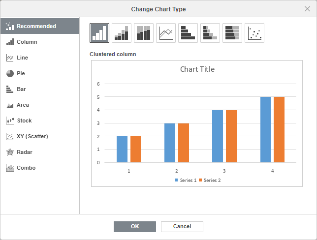
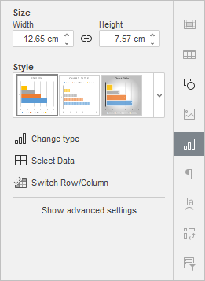
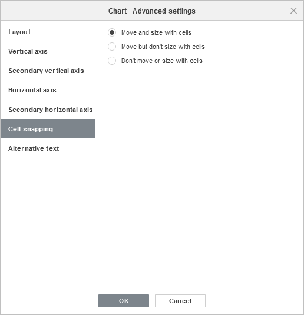
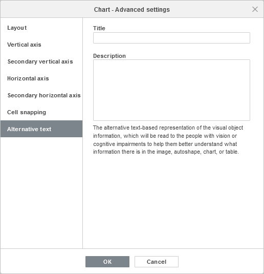
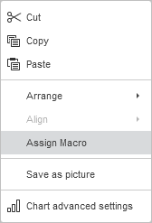

Umetanje grafikona
Umetnite preporučeni grafikon
Najlakši način da umetnete grafikon u Spreadsheet Editor je korišćenjem alata Preporučeni grafikon koji predlaže određene tipove grafikona u zavisnosti od izabranih podataka, kao i prikazuje pregled svih tipova grafikona.
- Izaberite opseg ćelija koji sadrži podatke koje želite da koristite za grafikon.
- Pređite na karticu Insert na gornjoj traci sa alatkama.
- Kliknite na ikonu Preporučeni grafikon na gornjoj traci sa alatkama.
- Prebacujte se između preporučenih tipova grafikona da biste videli kako će grafikon izgledati. Takođe možete koristiti kartice sa leve strane za pregled drugih tipova grafikona.
- Kada izaberete tip grafikona, kliknite na OK.

Ručno umetnite i prilagodite grafikon
Da biste umetnuli grafikon i ručno prilagodili njegove parametre,
- Izaberite opseg ćelija koji sadrži podatke koje želite da koristite za grafikon.
- Pređite na karticu Insert na gornjoj traci sa alatkama.
- Kliknite na ikonu Grafikon na gornjoj traci sa alatkama.
-
Izaberite potreban tip grafikona iz dostupnih opcija:
Stubičasti grafikoni
- Grupisani stubičasti
- Složeni stubičasti
- 100% složeni stubičasti
- 3-D grupisani stubičasti
- 3-D složeni stubičasti
- 3-D 100% složeni stubičasti
- 3-D stubičasti
Linijski grafikoni
- Linijski
- Složeni linijski
- 100% složeni linijski
- Linijski sa markerima
- Složeni linijski sa markerima
- 100% složeni linijski sa markerima
- 3-D linijski
Kružni grafikoni
- Kružni
- Prstenasti
- 3-D kružni
Trakasti grafikoni
- Grupisani trakasti
- Složeni trakasti
- 100% složeni trakasti
- 3-D grupisani trakasti
- 3-D složeni trakasti
- 3-D 100% složeni trakasti
Površinski grafikoni
- Površinski
- Složeni površinski
- 100% složeni površinski
Berzanski grafikoni
XY (Raspršeni) grafikoni
- Raspršeni
- Složeni trakasti
- Raspršeni sa glatkim linijama i markerima
- Raspršeni sa glatkim linijama
- Raspršeni sa pravim linijama i markerima
- Raspršeni sa pravim linijama
Radarski grafikoni
- Radarski
- Radarski sa markerima
- Popunjeni radarski
Kombinovani grafikoni
- Grupisani stubičasti - linijski
- Grupisani stubičasti - linijski na sekundarnoj osi
- Složeni površinski - grupisani stubičasti
- Prilagođena kombinacija
Nakon toga, grafikon će biti dodat na radni list.
Napomena: ONLYOFFICE Spreadsheet Editor podržava sledeće tipove grafikona koji su kreirani u urednicima trećih strana: Piramida, Trake (Piramida), Horizontalni/Vertikalni cilindri, Horizontalni/Vertikalni konusi. Možete otvoriti fajl koji sadrži takav grafikon i izmeniti ga koristeći dostupne alate za uređivanje grafikona. Sledeći tipovi su podržani samo za otvaranje: Histogram, Vodopad, Levaks.
Podesite podešavanja grafikona
Sada možete promeniti podešavanja umetnutog grafikona. Da biste promenili tip grafikona,
- Izaberite grafikon mišem.
-
Kliknite na ikonu Podešavanja grafikona na desnoj bočnoj traci.

- Otvorite padajuću listu Stil ispod i izaberite stil koji vam najviše odgovara.
- Otvorite padajuću listu Promeni tip i izaberite tip koji vam je potreban.
- Kliknite na opciju Zameni red/kolonu da biste promenili raspored redova i kolona na grafikonu.
Izabrani tip i stil grafikona će biti promenjeni.
Pored toga, dostupna su podešavanja 3D rotacije za 3D grafikone:

- X rotacija – podesite potrebnu vrednost rotacije X ose pomoću tastature ili putem strelica Levo i Desno sa desne strane.
- Y rotacija – podesite potrebnu vrednost rotacije Y ose pomoću tastature ili putem strelica Gore i Dole sa desne strane.
- Perspektiva – podesite potrebnu vrednost dubinske rotacije pomoću tastature ili putem strelica Uži ugao gledanja i Širi ugao gledanja sa desne strane.
- Osa pod pravim uglom – koristi se za podešavanje prikaza ose pod pravim uglom.
- Automatsko skaliranje – označite ovo polje da automatski skalirate vrednosti dubine i visine grafikona ili ga poništite da biste dubinu i visinu podesili ručno.
- Dubina (% od osnove) – podesite potrebnu vrednost dubine pomoću tastature ili strelica.
- Visina (% od osnove) – podesite potrebnu vrednost visine pomoću tastature ili strelica.
-
Podrazumevana rotacija – vratite 3D parametre na podrazumevane vrednosti.
Imajte u vidu da ne možete uređivati svaki element grafikona pojedinačno; podešavanja će biti primenjena na grafikon u celini.
Da biste uredili podatke grafikona:
- Kliknite na dugme Izaberi podatke na desnom panelu.
-
Koristite dijalog Podaci grafikona za upravljanje opcijama Opseg podataka grafikona, Stavke legende (serije), Oznake horizontalne ose (kategorija) i Zameni red/kolonu.

-
Opseg podataka grafikona – izaberite podatke za grafikon.
-
Kliknite na ikonu desno od polja Opseg podataka grafikona da biste izabrali opseg podataka.

-
Kliknite na ikonu desno od polja Opseg podataka grafikona da biste izabrali opseg podataka.
-
Stavke legende (serije) – dodajte, izmenite ili uklonite stavke legende. Unesite ili izaberite naziv serije za stavke legende.
- U odeljku Stavke legende (serije) kliknite na dugme Dodaj.
-
U prozoru Uredi seriju unesite novu stavku legende ili kliknite na ikonu desno od polja Naziv serije.

-
Oznake horizontalne ose (kategorija) – promenite tekst oznaka kategorija.
- U odeljku Oznake horizontalne ose (kategorija) kliknite na Uredi.
-
U polju Opseg oznaka ose unesite oznake koje želite da dodate ili kliknite na ikonu desno od polja Opseg oznaka ose da biste izabrali opseg podataka.

- Zameni red/kolonu – preuredite podatke radnog lista koji su konfigurisani u grafikonu ako nisu prikazani onako kako želite. Zamenite redove i kolone da biste prikazali podatke na drugačijoj osi.
-
Opseg podataka grafikona – izaberite podatke za grafikon.
- Kliknite na dugme OK da biste primenili promene i zatvorili prozor.
Kliknite na Prikaži napredna podešavanja da biste promenili druga podešavanja kao što su Raspored, Vertikalna osa, Sekundarna vertikalna osa, Horizontalna osa, Sekundarna horizontalna osa, Prijanjanje uz ćelije i Alternativni tekst.

Kartica Raspored omogućava da promenite raspored elemenata grafikona.
-
Odredite poziciju Naslova grafikona u odnosu na grafikon izborom potrebne opcije iz padajuće liste:
- Nijedno za prikaz bez naslova grafikona,
- Preklapanje za preklapanje i centriranje naslova u području iscrtavanja,
- Bez preklapanja za prikaz naslova iznad područja iscrtavanja.
-
Odredite poziciju Legende u odnosu na grafikon izborom potrebne opcije iz padajuće liste:
- Nijedno za prikaz bez legende,
- Dole za prikaz legende i poravnanje pri dnu područja iscrtavanja,
- Gore za prikaz legende i poravnanje pri vrhu područja iscrtavanja,
- Desno za prikaz legende i poravnanje desno od područja iscrtavanja,
- Levo za prikaz legende i poravnanje levo od područja iscrtavanja,
- Levo preklapanje za preklapanje i centriranje legende levo u području iscrtavanja,
- Desno preklapanje za preklapanje i centriranje legende desno u području iscrtavanja.
-
Navedite parametre za Oznake podataka (tj. tekstualne oznake koje predstavljaju tačne vrednosti tačaka podataka):
-
Odredite poziciju Oznaka podataka u odnosu na tačke podataka izborom odgovarajuće opcije iz padajuće liste. Dostupne opcije se razlikuju u zavisnosti od izabranog tipa grafikona.
- Za Stubičaste/Trakaste grafikone možete izabrati sledeće opcije: Nijedno, Centar, Unutra dole, Unutra gore, Spolja gore.
- Za Linijske/XY (Raspršene)/Berzanske grafikone možete izabrati sledeće opcije: Nijedno, Centar, Levo, Desno, Gore, Dole.
- Za Kružne grafikone možete izabrati sledeće opcije: Nijedno, Centar, Prilagodi širini, Unutra gore, Spolja gore.
- Za Površinske grafikone kao i za 3D Stubičaste, Linijske, Radarske i Trakaste grafikone možete izabrati sledeće opcije: Nijedno, Centar.
- Izaberite podatke koje želite da uključite u oznake označavanjem odgovarajućih polja: Naziv serije, Naziv kategorije, Vrednost,
- Unesite znak (zarez, tačka-zarez itd.) koji želite da koristite za razdvajanje više oznaka u polje Razdvajač oznaka podataka.
-
Odredite poziciju Oznaka podataka u odnosu na tačke podataka izborom odgovarajuće opcije iz padajuće liste. Dostupne opcije se razlikuju u zavisnosti od izabranog tipa grafikona.
- Linije – koristi se za izbor stila linije za Linijske/XY (Raspršene) grafikone. Možete izabrati jednu od sledećih opcija: Prave za korišćenje pravih linija između tačaka podataka, Glatke za korišćenje glatkih krivih između tačaka podataka ili Nijedno za neprikazivanje linija.
-
Markeri – koristi se za određivanje da li će markeri biti prikazani (ako je polje označeno) ili ne (ako polje nije označeno) za Linijske/XY (Raspršene) grafikone.
Napomena: opcije Linije i Markeri dostupne su samo za Linijske i XY (Raspršene) grafikone.
-
Opcije linije trenda – koristite opciju Prikaži jednačinu na grafikonu da bi se jednačine prikazale na dijagramu.
Ova opcija je dostupna za dijagrame koji uključuju linije trenda.

Kartica Vertikalna osa omogućava da promenite parametre vertikalne ose, koja se naziva i osa vrednosti ili y-osa, i prikazuje numeričke vrednosti. Imajte u vidu da će vertikalna osa biti osa kategorija koja prikazuje tekstualne oznake za Trakaste grafikone, pa će u tom slučaju opcije kartice Vertikalna osa odgovarati onima koje su opisane u sledećem odeljku. Za XY (Raspršene) grafikone, obe ose su ose vrednosti.
Napomena: odeljci Podešavanja ose i Mrežne linije biće onemogućeni za Kružne grafikone jer grafikoni ovog tipa nemaju ose ni mrežne linije.
- Izaberite Sakrij da biste sakrili vertikalnu osu na grafikonu, ostavite neoznačeno da bi vertikalna osa bila prikazana.
-
Odredite orijentaciju Naslova izborom odgovarajuće opcije iz padajuće liste:
- Nijedno za neprikazivanje naslova vertikalne ose,
- Rotirano za prikaz naslova odozdo nagore sa leve strane vertikalne ose,
- Horizontalno za prikaz naslova horizontalno sa leve strane vertikalne ose.
- Minimalna vrednost – koristi se za određivanje najniže vrednosti prikazane na početku vertikalne ose. Opcija Auto je podrazumevano izabrana, pri čemu se minimalna vrednost automatski izračunava u zavisnosti od izabranog opsega podataka. Možete izabrati opciju Fiksno iz padajuće liste i navesti drugu vrednost u polju sa desne strane.
- Maksimalna vrednost – koristi se za određivanje najviše vrednosti prikazane na kraju vertikalne ose. Opcija Auto je podrazumevano izabrana, pri čemu se maksimalna vrednost automatski izračunava u zavisnosti od izabranog opsega podataka. Možete izabrati opciju Fiksno iz padajuće liste i navesti drugu vrednost u polju sa desne strane.
- Presecanje osa – koristi se za određivanje tačke na vertikalnoj osi gde horizontalna osa treba da je preseče. Opcija Auto je podrazumevano izabrana, pri čemu se vrednost preseka osa automatski izračunava u zavisnosti od izabranog opsega podataka. Možete izabrati opciju Vrednost iz padajuće liste i navesti drugu vrednost u polju sa desne strane ili postaviti tačku preseka osa na Minimalnu/Maksimalnu vrednost vertikalne ose.
- Jedinice prikaza – koristi se za određivanje prikaza numeričkih vrednosti duž vertikalne ose. Ova opcija može biti korisna ako radite sa velikim brojevima i želite da vrednosti na osi budu prikazane na kompaktniji i čitljiviji način (npr. možete prikazati 50 000 kao 50 korišćenjem jedinica prikaza Hiljade). Izaberite željene jedinice iz padajuće liste: Stotine, Hiljade, 10 000, 100 000, Milioni, 10 000 000, 100 000 000, Milijarde, Bilioni ili izaberite opciju Nijedno da biste se vratili na podrazumevane jedinice.
- Vrednosti obrnutim redosledom – koristi se za prikaz vrednosti u suprotnom smeru. Kada polje nije označeno, najniža vrednost je na dnu, a najviša na vrhu ose. Kada je polje označeno, vrednosti su poređane odozgo nadole.
- Logaritamska skala – koristi se za omogućavanje logaritamskog skaliranja sa Osnovom koju određuje korisnik.
-
Odeljak Opcije oznaka podeoka omogućava podešavanje izgleda oznaka podeoka na vertikalnoj skali. Glavne oznake podeoka su veće podele skale koje mogu imati oznake sa numeričkim vrednostima. Sporedne oznake podeoka su podele skale koje se nalaze između glavnih oznaka podeoka i nemaju oznake. Oznake podeoka takođe određuju gde se mogu prikazati mrežne linije ako je odgovarajuća opcija podešena na kartici Raspored. Padajuće liste Glavni/Sporedni tip sadrže sledeće opcije postavljanja:
- Nijedno za neprikazivanje glavnih/sporednih oznaka podeoka,
- Presek za prikaz glavnih/sporednih oznaka podeoka sa obe strane ose,
- Unutra za prikaz glavnih/sporednih oznaka podeoka unutar ose,
- Spolja za prikaz glavnih/sporednih oznaka podeoka spolja od ose.
-
Odeljak Opcije oznaka omogućava podešavanje izgleda oznaka glavnih podeoka koje prikazuju vrednosti. Da biste odredili Poziciju oznake u odnosu na vertikalnu osu, izaberite odgovarajuću opciju iz padajuće liste:
- Nijedno za neprikazivanje oznaka podeoka,
- Nisko za prikaz oznaka podeoka levo od područja iscrtavanja,
- Visoko za prikaz oznaka podeoka desno od područja iscrtavanja,
- Pored ose za prikaz oznaka podeoka pored ose.
-
Da biste odredili Format oznake, kliknite na dugme Format oznake i izaberite odgovarajuću kategoriju.
Dostupne kategorije formata oznaka:
- Opšte
- Broj
- Naučni
- Računovodstveni
- Valuta
- Datum
- Vreme
- Procenat
- Razlomak
- Tekst
- Prilagođeno
Opcije formata oznaka se razlikuju u zavisnosti od izabrane kategorije. Za više informacija o promeni formata brojeva, posetite ovu stranicu.
- Označite Povezano sa izvorom da biste zadržali formatiranje brojeva iz izvora podataka u grafikonu.

Napomena: Sekundarne ose su podržane samo u kombinovanim grafikonima.
Sekundarne ose su korisne u kombinovanim grafikonima kada se serije podataka znatno razlikuju ili kada se koriste mešoviti tipovi podataka za iscrtavanje grafikona. Sekundarne ose olakšavaju čitanje i razumevanje kombinovanog grafikona.
Kartica Sekundarna vertikalna/horizontalna osa se pojavljuje kada izaberete odgovarajuću seriju podataka za kombinovani grafikon. Sva podešavanja i opcije na kartici Sekundarna vertikalna/horizontalna osa ista su kao podešavanja na kartici Vertikalna/Horizontalna osa. Za detaljan opis opcija Vertikalne/horizontalne ose, pogledajte opis iznad/ispod.

Kartica Horizontalna osa omogućava da promenite parametre horizontalne ose, koja se naziva i osa kategorija ili x-osa, i prikazuje tekstualne oznake. Imajte u vidu da će horizontalna osa biti osa vrednosti koja prikazuje numeričke vrednosti za Trakaste grafikone, pa će u tom slučaju opcije kartice Horizontalna osa odgovarati onima koje su opisane u prethodnom odeljku. Za XY (Raspršene) grafikone, obe ose su ose vrednosti.
- Izaberite Sakrij da biste sakrili horizontalnu osu na grafikonu, ostavite neoznačeno da bi horizontalna osa bila prikazana.
-
Odredite orijentaciju Naslova izborom odgovarajuće opcije iz padajuće liste:
- Nijedno ako ne želite da prikažete naslov horizontalne ose,
- Bez preklapanja za prikaz naslova ispod horizontalne ose,
- Mrežne linije se koriste za određivanje koje Horizontalne mrežne linije će biti prikazane izborom odgovarajuće opcije iz padajuće liste: Nijedno, Glavne, Sporedne ili Glavne i sporedne.
- Presecanje osa – koristi se za određivanje tačke na horizontalnoj osi gde vertikalna osa treba da je preseče. Opcija Auto je podrazumevano izabrana; u tom slučaju se vrednost preseka osa automatski izračunava u zavisnosti od izabranog opsega podataka. Možete izabrati opciju Vrednost iz padajuće liste i navesti drugu vrednost u polju sa desne strane ili postaviti tačku preseka osa na Minimalnu/maksimalnu vrednost (što odgovara prvoj i poslednjoj kategoriji) na horizontalnoj osi.
- Položaj ose – koristi se za određivanje gde će tekstualne oznake ose biti postavljene: Na oznakama podeoka ili Između oznaka podeoka.
- Vrednosti obrnutim redosledom – koristi se za prikaz kategorija u suprotnom smeru. Kada polje nije označeno, kategorije se prikazuju sleva nadesno. Kada je polje označeno, kategorije su poređane zdesna nalevo.
-
Odeljak Opcije oznaka podeoka omogućava podešavanje izgleda oznaka podeoka na horizontalnoj skali. Glavne oznake podeoka su veće podele koje mogu imati oznake sa vrednostima kategorija. Sporedne oznake podeoka su manje podele koje se nalaze između glavnih oznaka podeoka i nemaju oznake. Oznake podeoka takođe određuju gde se mogu prikazati mrežne linije ako je odgovarajuća opcija podešena na kartici Raspored. Možete podesiti sledeće parametre oznaka podeoka:
- Glavni/sporedni tip – koristi se za određivanje sledećih opcija postavljanja: Nijedno za neprikazivanje glavnih/sporednih oznaka podeoka, Presek za prikaz glavnih/sporednih oznaka podeoka sa obe strane ose, Unutra za prikaz glavnih/sporednih oznaka podeoka unutar ose, Spolja za prikaz glavnih/sporednih oznaka podeoka spolja od ose.
- Interval između oznaka – koristi se za određivanje koliko kategorija treba da bude prikazano između dve susedne oznake podeoka.
-
Odeljak Opcije oznaka omogućava podešavanje izgleda oznaka koje prikazuju kategorije.
- Pozicija oznake – koristi se za određivanje gde će oznake biti postavljene u odnosu na horizontalnu osu. Izaberite odgovarajuću opciju iz padajuće liste: Nijedno za neprikazivanje oznaka kategorija, Nisko za prikaz oznaka kategorija pri dnu područja iscrtavanja, Visoko za prikaz oznaka kategorija pri vrhu područja iscrtavanja, Pored ose za prikaz oznaka kategorija pored ose.
- Udaljenost oznaka ose – koristi se za određivanje koliko blizu osi treba da budu postavljene oznake. Potrebnu vrednost možete navesti u polju za unos. Što je vrednost veća, veća je udaljenost između ose i oznaka.
- Interval između oznaka – koristi se za određivanje koliko često će oznake biti prikazane. Opcija Auto je podrazumevano izabrana; u tom slučaju se oznake prikazuju za svaku kategoriju. Možete izabrati opciju Ručno iz padajuće liste i navesti potrebnu vrednost u polju sa desne strane. Na primer, unesite 2 da biste prikazali oznake za svaku drugu kategoriju itd.
-
Da biste odredili Format oznake, kliknite na dugme Format oznake i izaberite odgovarajuću kategoriju.
Dostupne kategorije formata oznaka:
- Opšte
- Broj
- Naučni
- Računovodstveni
- Valuta
- Datum
- Vreme
- Procenat
- Razlomak
- Tekst
- Prilagođeno
Opcije formata oznaka se razlikuju u zavisnosti od izabrane kategorije. Za više informacija o promeni formata brojeva, posetite ovu stranicu.
- Označite Povezano sa izvorom da biste zadržali formatiranje brojeva iz izvora podataka u grafikonu.
Kartica Prijanjanje uz ćelije sadrži sledeće parametre:
- Pomeraj i promeni veličinu sa ćelijama – ova opcija omogućava da grafikon „prijanja“ uz ćeliju iza njega. Ako se ćelija pomeri (npr. kada ubacite ili obrišete redove/kolone), grafikon će se pomeriti zajedno sa ćelijom. Ako povećate ili smanjite širinu ili visinu ćelije, grafikon će takođe promeniti svoju veličinu.
- Pomeraj, ali ne menjaj veličinu sa ćelijama – ova opcija omogućava da grafikon „prijanja“ uz ćeliju iza njega, ali sprečava promenu veličine grafikona. Ako se ćelija pomeri, grafikon će se pomeriti zajedno sa ćelijom, ali ako promenite veličinu ćelije, dimenzije grafikona ostaju nepromenjene.
- Ne pomeraj niti menjaj veličinu sa ćelijama – ova opcija omogućava da sprečite pomeranje ili promenu veličine grafikona ako su položaj ili veličina ćelije promenjeni.

Kartica Alternativni tekst omogućava da navedete Naslov i Opis koji će biti pročitani osobama sa oštećenjem vida ili kognitivnim smetnjama kako bi lakše razumele koje informacije grafikon sadrži.

Uređivanje elemenata grafikona
Da biste uredili Naslov grafikona, izaberite podrazumevani tekst mišem i umesto njega unesite svoj.
Da biste promenili formatiranje fonta unutar tekstualnih elemenata, kao što su naslov grafikona, naslovi osa, stavke legende, oznake podataka itd., izaberite željeni tekstualni element levim klikom. Zatim koristite ikone na kartici Home na gornjoj traci sa alatkama da promenite font tip, stil, veličinu ili boju.
Kada je grafikon izabran, dostupna je i ikona Podešavanja oblika sa desne strane, pošto se oblik koristi kao pozadina za grafikon. Možete kliknuti na ovu ikonu da otvorite karticu Podešavanja oblika na desnoj bočnoj traci i podesite Ispunu i Liniju oblika. Imajte u vidu da ne možete promeniti tip oblika.
Korišćenjem kartice Podešavanja oblika na desnom panelu možete ne samo podesiti samu oblast grafikona, već i promeniti elemente grafikona, kao što su područje iscrtavanja, serije podataka, naslov grafikona, legenda itd., i primeniti različite tipove ispune na njih. Izaberite element grafikona klikom levim tasterom miša i odaberite željeni tip ispune: puna boja, gradijent, tekstura ili slika, šara. Navedite parametre ispune i po potrebi podesite nivo Neprozirnosti. Kada izaberete vertikalnu ili horizontalnu osu ili mrežne linije, podešavanja poteza su dostupna samo na kartici Podešavanja oblika: boja, širina, tip i neprozirnost. Za više detalja o radu sa bojama oblika, ispunama i potezom, pogledajte ovu stranicu.
Napomena: opcija Prikaži senku je takođe dostupna na kartici Podešavanja oblika, ali je onemogućena za elemente grafikona.
Ako je potrebno da promenite veličinu elemenata grafikona, levim klikom izaberite željeni element i prevucite jedan od 8 belih kvadratića koji se nalaze duž oboda elementa.
Da biste promenili položaj elementa, kliknite levim tasterom na njega, proverite da li se kursor promenio u , držite levi taster miša i prevucite element na željenu poziciju.
Da biste obrisali element grafikona, izaberite ga levim klikom i pritisnite taster Delete na tastaturi.
Takođe možete rotirati 3D grafikone pomoću miša. Kliknite levim tasterom unutar područja iscrtavanja i držite taster miša. Prevucite kursor bez puštanja tastera miša da biste promenili orijentaciju 3D grafikona.

Ako je potrebno, možete promeniti veličinu i položaj grafikona.
Da biste obrisali umetnuti grafikon, kliknite na njega i pritisnite taster Delete.
Dodeljivanje makroa grafikonu
Možete obezbediti brz i jednostavan pristup makrou u tabeli dodeljivanjem makroa bilo kom grafikonu. Kada dodelite makro, grafikon se prikazuje kao kontrola dugmeta i možete pokrenuti makro kad god kliknete na njega.
Da biste dodelili makro:
-
Desnim klikom na grafikon kome dodeljujete makro izaberite opciju Dodeli makro iz padajućeg menija.

- Otvoriće se dijalog Dodeli makro
-
Izaberite makro sa liste ili unesite naziv makroa i kliknite na OK da potvrdite.

Kada je makro dodeljen, i dalje možete izabrati grafikon radi drugih operacija levim klikom na površinu grafikona.
Korišćenje mini-grafikona
ONLYOFFICE Spreadsheet Editor podržava Mini-grafikone. Mini-grafikoni su mali grafikoni koji staju u jednu ćeliju i predstavljaju efikasan alat za vizualizaciju podataka. Za više informacija o tome kako da kreirate, uređujete i formatirate mini-grafikone, pogledajte naša uputstva Umetanje mini-grafikona.